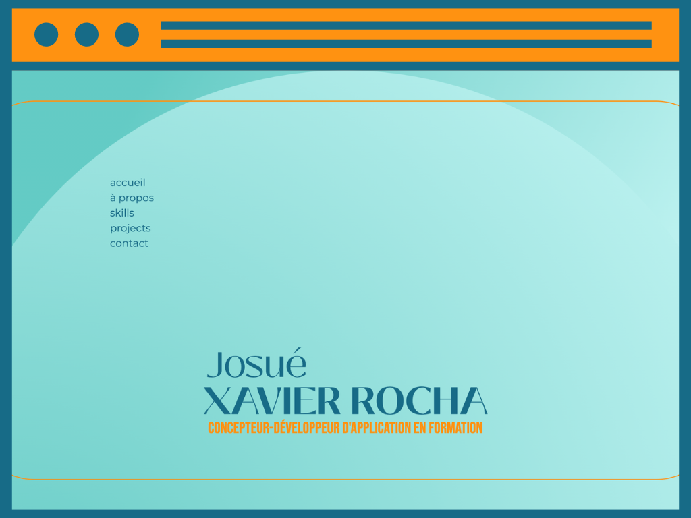
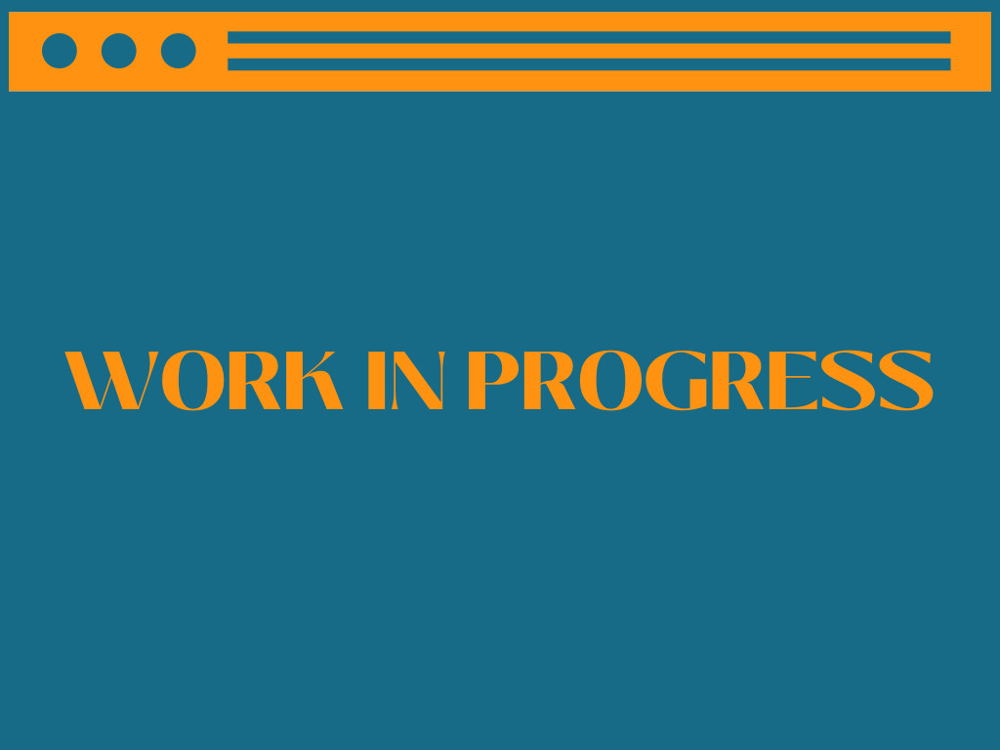

Josué
XAVIER ROCHA
Concepteur-développeur d'application en formation
Bonjour, je suis Josué.
Un concepteur-développeur d'applications en devenir.
Un Brésilien basé à Strasbourg depuis 2020. Un avocat en reconversion professionnelle. Et probablement quelqu'un avec qui vous collaborerez très bientôt.
Le fait d'avoir grandi dans les années 90 et d'avoir connu l'évolution exponentielle de l'informatique, de l'Internet et des nouvelles technologies me fait voir l'univers de la programmation et ses possibilités avec beaucoup d'admiration.
Il y avait toujours eu un adolescent en moi passionné de technologie, qui a vécu l'ère des blogs et qui a même fait son propre blog HTML et WordPress. Un adolescent qui a joué pendant des heures RPGs, version sur table et numérique, tellement passionné, qui a même créé un croquis de son propre jeu avec RPG Maker.
Suivre l'évolution de l'informatique et comprendre la conception des technologies qui l'entourent a toujours fait partie de mon histoire.
Tout aussi passionné par la littérature, le cinéma, le design et les sciences sociales, j'ai choisi de commencer ma vie professionnelle par le droit. Après une décennie d'étude de la loi et d'exercice des activités juridiques, je peux dire que cette voie, parmi beaucoup de choses, m'a rendu enclin à la résolution de problèmes, à l'adaptation, à l'obtention de résultats et à la bonne gestion du temps.
J'ai décidé de commencer un nouveau chapitre de ma vie professionnelle : passer du droit à la programmation.
Cette reconversion devient de plus en plus ambitieuse, ce qui me motive à aller vers cet objectif. J'ai commencé à étudier et à pratiquer de manière autodidacte et, aujourd'hui, je me sens prêt et motivé à commencer un contrat de professionnalisation.
Je suis sûr que ce sera une expérience qui apportera beaucoup de preuves et beaucoup d'apprentissage des deux côtés. Je suis impatient de me lancer dans ce nouveau défi et de voir les connaissances que je vais acquérir pendant. Je suis aussi impatient de découvrir le professionnel que je vais devenir plus tard.

Hard skills
J’ai des connaissances en développement web, y compris les langages HTML, CSS et JavaScript.
Je suis capable de concevoir des interfaces utilisateur attrayantes et conviviales. Je suis à l’aise avec l’usage des outils de conception graphique tels que Figma ou Adobe XD.
Les langages de programmation m’attirent beaucoup et je suis au point d’approfondir les études de Python, Java et C#.
Je comprends les concepts de base de données relationnelles et je sais comment interagir avec des systèmes de gestion (SGBD) tel que SQL.
Je maitrise les principes de base des systèmes d'exploitation tels que Windows, macOS. Ainsi que les concepts de réseau et de sécurité associés.
Je comprends l’importance de rester à jour avec les nouvelles technologies et les tendances du secteur, car le domaine évolue rapidement.
Soft skills
Grace à mon parcours précèdent, j’ai l’habitude avec l’exécution des projets, la planification, l'estimation des délais et des ressources, la gestion des risques, la comunication et la collaboration avec d'autres membres de l'équipe.
J’ai la capacité d’analyser et de résoudre les problèmes de manière logique et efficace ; de prendre du recul, d'identifier les problèmes, d'explorer différentes solutions et de mettre en œuvre des mesures correctives.
Jongler avec plusieurs tâches et respecter des délais est une réalité pour moi à l’environnement du travail. La gestion du temps et la capacité à prioriser les tâches font partie de ma vie professionnelle depuis le début. Pour ça, je comprends que rester organisé et respecter les échéances est essentiel.
Je suis orienté vers les résultats. J’ai la mentalité axée à l'achèvement des objectifs et la livraison des projets dans les délais. Cela implique d'être proactif, de faire preuve d'initiative et de prendre la responsabilité de la qualité du travail.
Je suis capable de penser de manière créative et d'apporter des idées innovantes, qui se démarquent et répondent aux besoins du projet ; capable de s'adapter au changement, d'apprendre de nouvelles compétences et de s'ajuster rapidement aux nouvelles exigences.
Hobbies
Pendant mon temps libre, j’aime m’occuper de mon bien-être et de ma santé physique et mentale. C’est toujours un défi d’essayer de trouver une pause dans la journéé et d’échapper à la sédentarité pour aller à la salle de sport, mais j’essaie de le faire sporadiquement. J’aime courir à l’extérieur aussi.
J’ai toujours aimé écrire et lire. J’ai fait sans aucune prétention quelques rimes, qui ne sont pas une épopée, mais que je considère comme un excellent exercice créatif.
Acquérir de nouvelles connaissances est aussi quelque chose qui me passionne. J’aime étudier constamment. Certaines des choses que j’ai apprises en étudiant seul : jouer de la guitare et de la langue française.
La musique est une autre de mes passions, et plus précisément la création de playlist, par thème, par sonorité, par décennie. J’ai déjà créé plus de 50 playlists sur Spotify.
Projets
-

Créé dans le but de composer ma candidature pour un contrat de professionnalisation. L'objectif est de montrer mes compétences en tant que développeur web et concepteur. J'ai utilisé HTML, CSS, Javascript et Bootstrap.
-

Projet en collaboration libre avec les développeurs Joel Xavier Rocha et Eduardo Henrique da Silva Freitas. Outil développé pour un groupe de cliniques de physiothérapie. Il permet la planification des rendez-vous, le suivi des patients, entre autres fonctions. On utilise principalement Go, JavaScript, TypeScript, HTML et Vue.
-
Projet encore à démarrer. Il s’agit d’une demande d’un client du secteur optique qui a besoin d’un nouveau site d'internet..
mon CV :